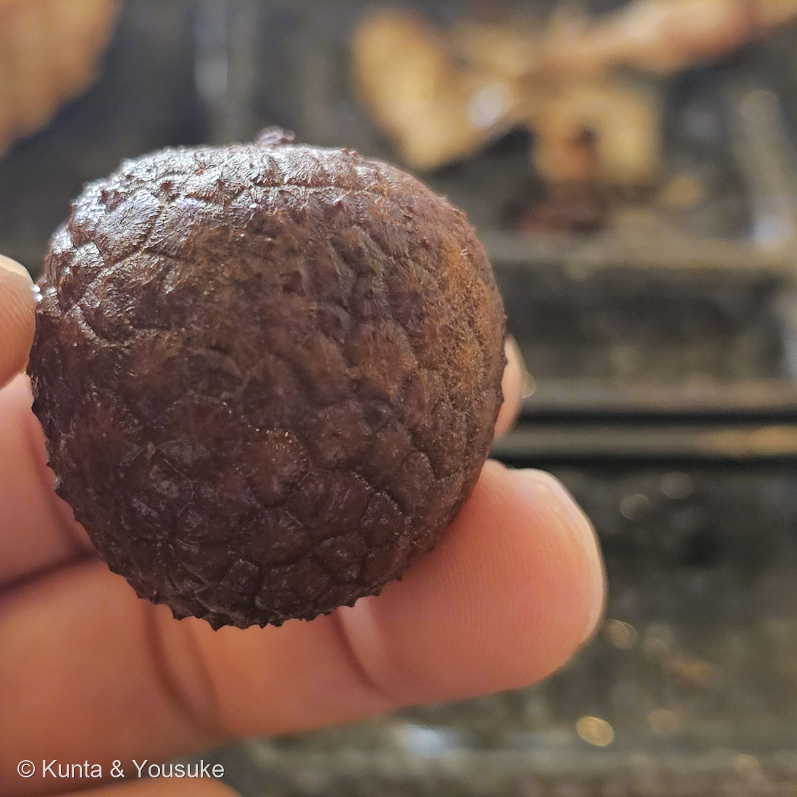
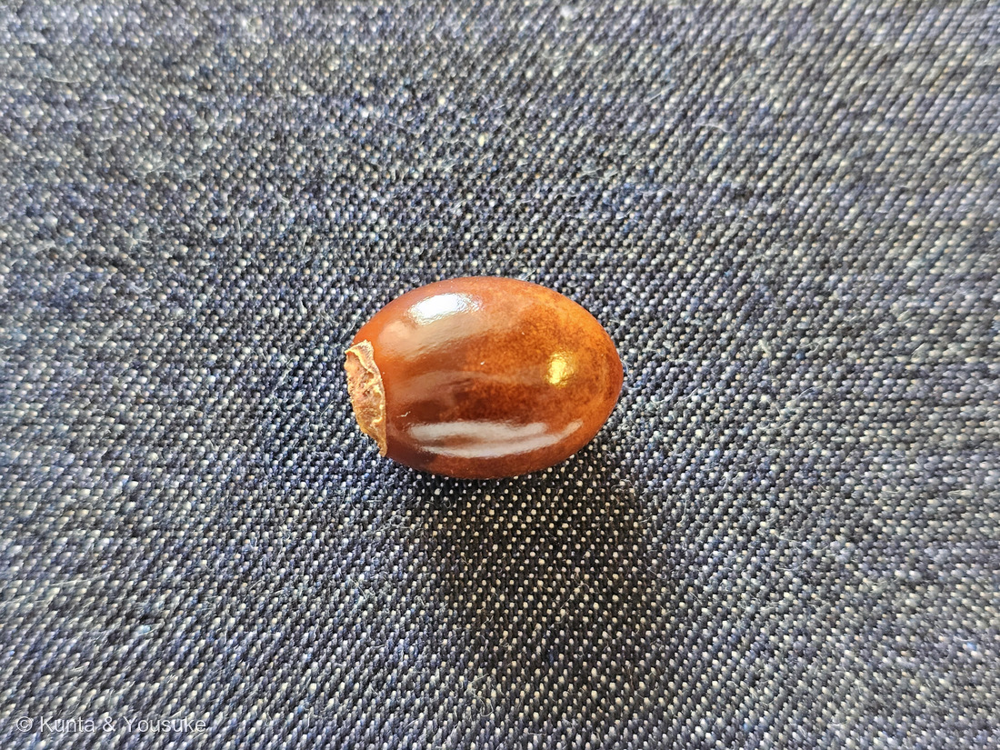
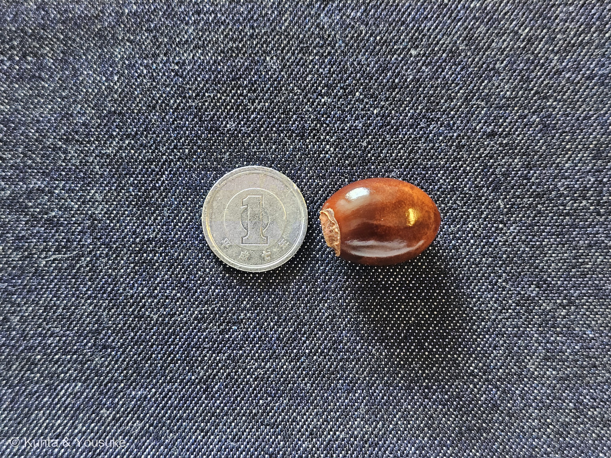

地図を読み込んでいるよ…
🔍 写真も地図も、押しているあいだ拡大して見られるよ（スマホは指を置いてすこし待ってね）。
🌍 の地図＝この子がもともと自生している場所を緑に。中国の嶺南地方（華南）原産。いまは熱帯・亜熱帯の中国南部から東南アジア、オーストラリア北部などで広く栽培される（日本語版Wikipedia）。くわしくは下の地図の説明を見てね。
⭐中国の南のはしが、この果物のふるさとだよ＝日本語版Wikipediaは「中国の嶺南地方原産」とする＝⭐嶺南（れいなん）＝南嶺山脈より南、つまり広東・広西・海南のあたり。ここでは福建と雲南も入れて5つを塗った＝⚠「嶺南」の範囲は書きかたによって少し動くので、ぼくの見当も入っているよ。⚠⚠いちばん大事なのは、この緑が「栽培されている場所」ではないこと＝いまは熱帯・亜熱帯の中国南部から東南アジア、オーストラリア北部などで広く栽培されている（同）＝⭐そちらまで塗ると、地図が「ライチが買える場所」になってしまうから、原産のところだけにした。⭐⭐そして日本も緑じゃないけれど、じつは沖縄・鹿児島・宮崎で小規模に栽培されているよ（主にハウスの中）＝⭐本文の「日本じゃ難しいかな？」の節を見てね。⭐同じムクロジ科では189 モミジが日本、031 フウセンカズラが北アメリカ南部〜熱帯アメリカ＝⭐⭐同じ科なのに、ずいぶん遠いところに散らばっている仲間だね。
⚠ 地図は国（日本と中国だけ県・省）までしか塗れないから、ほんとうの分布より広く見えていることがあるよ。地図はだいたいの場所。正確なところは、上の文を見てね。
ライチ（レイシ・茘枝）
Litchi chinensis Sonn.
別名 レイシ（茘枝） 英名 lychee · litchi ⭐「ライチ」は中国語の発音「リーヂー」から
ムクロジ科 · Sapindaceae（レイシ属 Litchi・ムクロジ目 Sapindales）── ⭐図鑑で3人目のムクロジ科（031 フウセンカズラ・189 モミジ）／⚠科は104のまま
燻太さんの言葉「長崎で泊まったホテルのバイキングで食べたライチ。いつか株全体をみてみたいけど、日本じゃ難しいかな？」「それにしても、種子の表面がピカピカ。果肉は白くてプリプリだけど、初めて食べる人は一瞬ためらいそう。味と香りは最高だね。」── ⭐⭐⭐その「ためらい」には理由があったよ。白いプリプリは、果肉じゃないんだ
⭐⭐⭐ 名前と学名の由来 ── 「リーヂー」が、そのまま名前になった
- 和名は「レイシ（茘枝）」。⭐「ライチ」は中国語の発音「リーヂー」から（日本語版Wikipedia）＝英語の lychee も同じところから来ているよ。
- ⭐つまり「ライチ」も「レイシ」も、同じ漢字「茘枝」の、ちがう読みかたなんだ。⭐中国語ふうに読めばライチ、日本語の音読みで読めばレイシ。
- 学名は Litchi chinensis＝⭐属名もそのまま「Litchi」。⭐種小名 chinensis は「中国の」だよ。
- ⭐⭐唐の楊貴妃がこれを大変に好み、華南から都の長安まで早馬で運ばせた話は有名（同）＝⭐傷みやすい果実を、何日もかけて運ばせたということだね。
⭐⭐ この植物のこと ── 中国の南の、常緑の高木
- 中国の嶺南地方（華南）が原産。いまは熱帯・亜熱帯の中国南部から東南アジア、オーストラリア北部などで広く栽培される（日本語版Wikipedia）。
- ⭐株の姿は常緑高木＝葉は偶数羽状複葉（2〜4対の小葉からなる）で互生（同）＝⭐羽根のように小葉がならぶ葉だよ。
- 果実は表面が赤くうろこ状で、その中に大きい種子が1個（同）＝⭐写真①のうろこが、まさにそれ。
- ⭐⭐そして食べる白い部分は仮種皮（同）＝⭐ここがこの子のいちばん面白いところなので、下に節をつくったよ。
⭐⭐ 同定について ── 1円玉で測ってみた

③ 1円玉（直径20.0mm）とならべて 🔍 押しているあいだ拡大して見られるよ。
- ⭐燻太さんが食べたものなので、同定というより「これがライチだ」と分かっている状態だけれど、写真ともちゃんと合っているよ：
・果実の表面が赤褐色で、こまかいうろこ状（写真①）＝「表面は赤くうろこ状で、その中に大きい種子が1個」（日本語版Wikipedia）
・種子は大きく1個、光沢のある赤褐色（写真②） - ⭐⭐燻太さんが1円玉といっしょに撮ってくれたおかげで、大きさが測れたよ（写真③）。⭐1円玉の直径はちょうど20.0mm。日本の硬貨でいちばん覚えやすい「ものさし」なんだ。
- ⭐測ったら、種子の長径はおよそ23mm。⚠ぼくが写真の上で測ったので、±1mmくらいの誤差はあると思ってね。
- ⭐⭐燻太さんの「種子の表面がピカピカ」――ほんとうにつやつやだね（写真②）。⭐仮種皮にぴったり包まれて、外の空気にも土にもふれずに育ったところだから、こんなにきれいなんだと思う。⚠これはぼくの見立てだよ。
- ⭐左はしに、うすい茶色の皮のかけらが残っている＝仮種皮がくっついていたところだね。
⭐⭐⭐⭐⭐ 燻太さんの「初めて食べる人は一瞬ためらいそう」── その白いプリプリは、果肉じゃないんだ
- ⭐⭐⭐ライチの白くてプリプリした部分は、果肉ではなくて「仮種皮（かしゅひ）」なんだ（日本語版Wikipedia「白い食用部分は仮種皮」）。
- ⭐仮種皮＝種のまわりを、あとから包むように育つ、別の組織。⭐ふつうの果物で食べる「果肉」とは、できかたがちがうんだよ。
- ⭐⭐燻太さんが「一瞬ためらいそう」と感じたのは、たぶん正しいんだ――あれは「実の中身」というより、種にかぶさった、みずみずしい衣だから。⭐見なれた果物とは、どこか手ざわりがちがう。
- ⭐⭐⭐⭐⭐そして、うちの図鑑には同じ「仮種皮」を持つ子が、もう2人いるんだ：
・276 マサキ（きょう登録したばかり）＝「蒴果は…紅色に熟し、裂開すると橙赤色の仮種皮に包まれた種子が見える」（三河の植物観察）
・128 ザクロ＝「赤い粒（仮種皮＝種を包む、みずみずしい部分）」（128のページにそう書いたよ） - ⭐⭐⭐つまり ── ライチを食べるとき、ぼくらはマサキの実の「赤いところ」と同じ場所を食べている。⭐科もちがう（ムクロジ科／ニシキギ科／ミソハギ科）のに、同じしくみを持っているんだ。
- ⭐⭐なぜそんなものを作るのか＝⭐種を運んでもらうため。動物に「食べる価値のあるもの」を種のまわりに用意して、中身の種はそのまま出してもらう。⚠マサキは鳥に、ライチは（もともとは）森の動物に。⭐人がライチを世界じゅうに広げたのも、結局は同じことなのかもしれないね。
⭐⭐⭐⭐ 燻太さんの「日本じゃ難しいかな？」── だいじょうぶ、日本にもいるよ
- ⭐⭐⭐日本でも栽培されているんだ＝「沖縄県、鹿児島県、宮崎県などで小規模であるが栽培」（日本語版Wikipedia）。⭐主に施設栽培（ハウスの中）だよ。
- ⚠露地でどんどん育つ木ではない＝常緑高木で、熱帯・亜熱帯の木だから。⭐でも「日本では見られない」わけではないんだ。
- ⭐⭐そして、もっと近い可能性がある＝熱帯果樹の温室がある植物園。⭐⭐ぼくらが行った広島市植物公園や森きららにも、熱帯の植物をあつめた温室があるでしょう。⏳次に行ったとき、名札をさがしてみようよ。⚠あるかどうかは、ぼくには確かめられていないよ。
- ⏳もうひとつの手＝食べたあとの種を植えてみる。⚠熱帯の木なので、日本の冬は室内が要るけれどね。
⭐⭐⭐ モミジと同じ科 ── ムクロジ科は3人目
- ⭐⭐ライチはムクロジ科。⭐うちの図鑑では3人目だよ＝031 フウセンカズラ（フウセンカズラ属）・189 モミジ（カエデ属）→ 277 ライチ（レイシ属）。⚠科は増えないので104のまま。
- ⭐⭐⭐モミジとライチが同じ科――びっくりするよね。⭐189のページに書いたとおり、モミジは「かつてはカエデ科だったが、APG分類でムクロジ科に含められた」んだ。
- ⭐ムクロジ目でいえば、182 ケムリノキ・183 ヌルデも親せき（あちらはウルシ科）。
- ⭐⭐おまけにムクロジを選んだのは、この科の名前そのものの木だから＝⭐日本の神社やお寺で会えるし、羽根つきの羽根の、あの黒い玉があの木の種で、果皮は水でもむと泡立つ石鹸になるんだ。⭐⭐ライチは「食べる」ムクロジ科、ムクロジは「洗う・遊ぶ」ムクロジ科だね。
出典：日本語版Wikipedia「レイシ」（学名・科・名前の由来・原産・樹形と葉・果実と仮種皮・日本での栽培・楊貴妃／ja.wikipedia.org）／⭐種子の大きさは、燻太さんが1円玉（直径20.0mm）とならべて撮ってくれた写真から、ぼくが測ったよ